◆
⚠ 命名空间
delicate_dyes 并未安装于本整合包——此页仅收录其他模组数据（兼容配方/标签等）中引用到的条目，不代表该模组存在。物品与方块
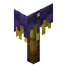
Blurple Jack o' Strawdelicate_dyes:blurple_jack_o_straw · 方块Blurple Shulker Tiffin
delicate_dyes:blurple_shulker_tiffin · 物品
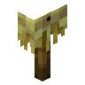
Canary Jack o' Strawdelicate_dyes:canary_jack_o_straw · 方块Canary Shulker Tiffin
delicate_dyes:canary_shulker_tiffin · 物品
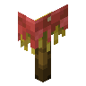
Coral Jack o' Strawdelicate_dyes:coral_jack_o_straw · 方块Coral Shulker Tiffin
delicate_dyes:coral_shulker_tiffin · 物品
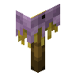
Lavender Jack o' Strawdelicate_dyes:lavender_jack_o_straw · 方块Lavender Shulker Tiffin
delicate_dyes:lavender_shulker_tiffin · 物品
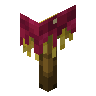
Rose Jack o' Strawdelicate_dyes:rose_jack_o_straw · 方块Rose Shulker Tiffin
delicate_dyes:rose_shulker_tiffin · 物品
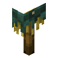
Sacramento Jack o' Strawdelicate_dyes:sacramento_jack_o_straw · 方块Sacramento Shulker Tiffin
delicate_dyes:sacramento_shulker_tiffin · 物品
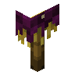
Sangria Jack o' Strawdelicate_dyes:sangria_jack_o_straw · 方块Sangria Shulker Tiffin
delicate_dyes:sangria_shulker_tiffin · 物品
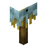
Sky Jack o' Strawdelicate_dyes:sky_jack_o_straw · 方块Sky Shulker Tiffin
delicate_dyes:sky_shulker_tiffin · 物品
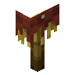
Canary Jack o' Strawdelicate_dyes:umber_jack_o_straw · 方块
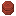
Umber Shulker Tiffindelicate_dyes:umber_shulker_tiffin · 物品
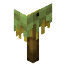
Wasabi Jack o' Strawdelicate_dyes:wasabi_jack_o_straw · 方块Wasabi Shulker Tiffin
delicate_dyes:wasabi_shulker_tiffin · 物品